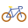
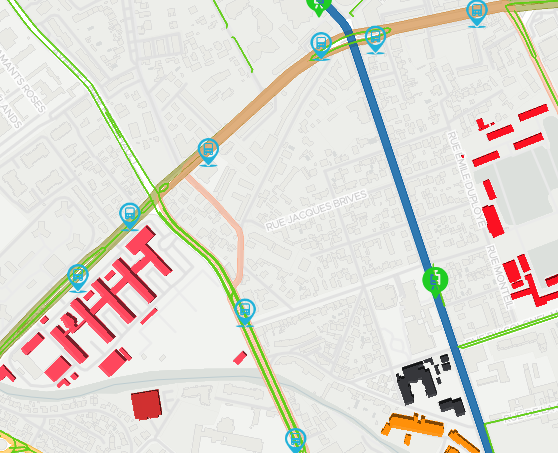
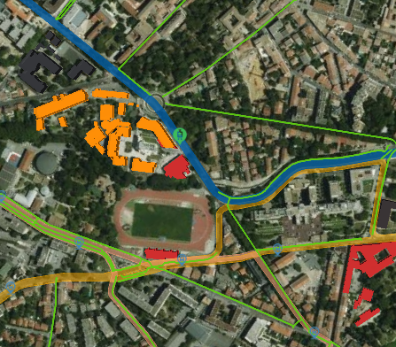
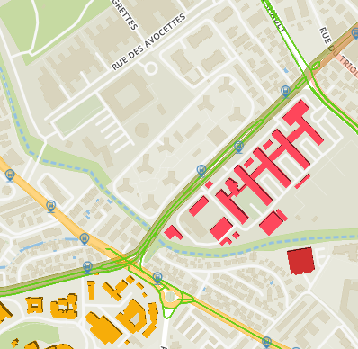

Université de Montpellier
Rechercher
Vue départ
Université Montpellier
Université Paul-Valéry
UFR STAPS
Faculté de Droit et Science politique
Faculté de médecine
Campus Saint Priest
IUT Montpellier
L'Institut Agro




2D
3D
Mode de transport :
Voiture
Marche